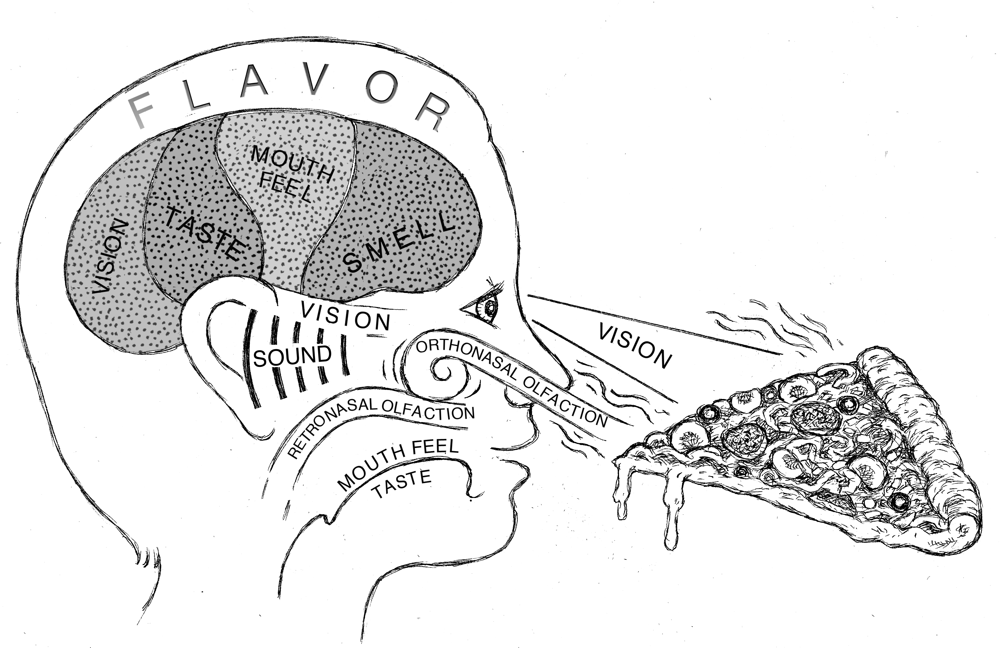

How do we choose what foods to eat? Eating is a dynamic, multisensory process shaped by odor, taste, and texture. Odors and tastes arise from complex mixtures of compounds that are released as foods are manipulated in the mouth and evolve over time. Our lab's research focuses on identifying the chemical, structural, and temporal features of sensory stimuli that drive the perceptual organization of flavor, with the goal of uncovering general principles governing food choice across individuals with intact and altered sensory systems.
We are engaged in academic and industry research and provide fee-based sensory testing services through the Texas A&M Sensory Science Facility.

From fundamental research to fee-based industry services, our lab operates at the intersection of basic science and real-world application.
Meet Dr. Pellegrino and our graduate students. We are always looking for motivated researchers to join the lab.
We offer consumer testing, descriptive analysis, and instrumental methods for industry and academic partners.
Interested in being a taste tester? Sign up to participate in research studies conducted at our facility.